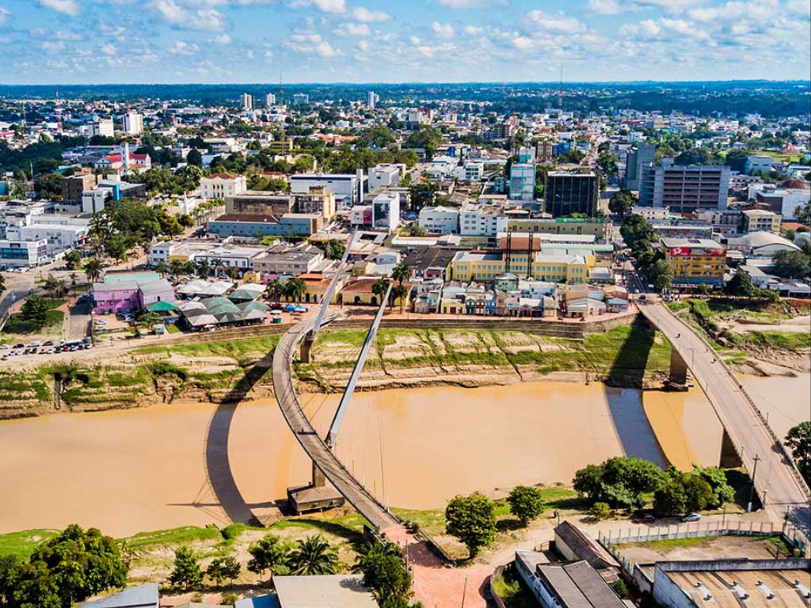

O Acre é um dos estados mais curiosos e comentados do Brasil, muitas vezes cercado por brincadeiras na internet, mas com uma história e cultura bastante ricas. Localizado no extremo oeste do país, em plena Amazônia, o estado possui paisagens naturais impressionantes, rios extensos e uma enorme diversidade de fauna e flora. Sua capital, Rio Branco, é o principal centro urbano e econômico da região. Além das belezas naturais, o Acre ficou marcado pela luta ambiental liderada por Chico Mendes, cuja atuação teve impacto mundial na defesa da floresta amazônica. Apesar dos memes e piadas que circulam sobre o estado, o Acre tem grande importância cultural, ambiental e histórica para o Brasil.

voltar